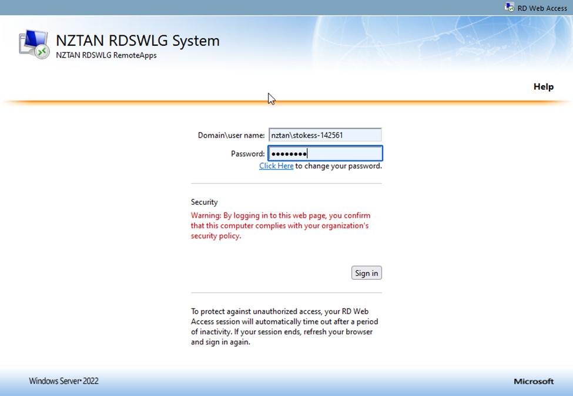
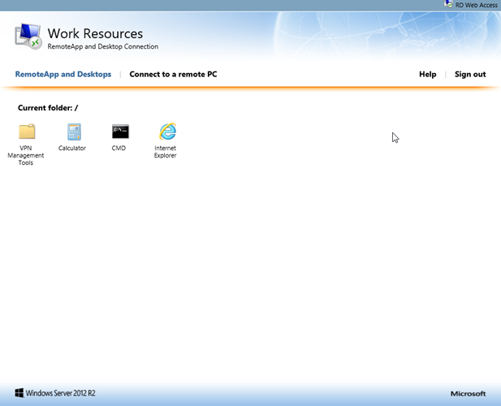
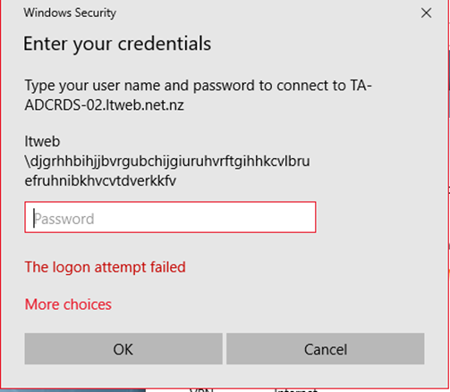
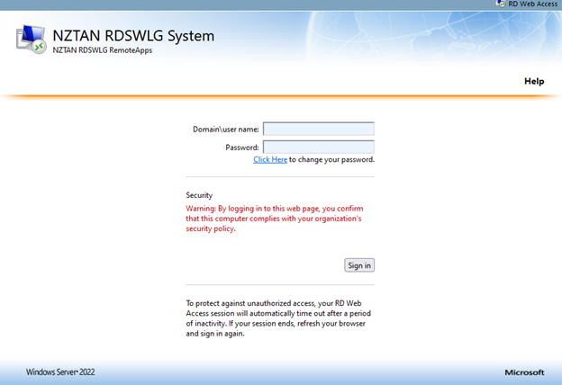
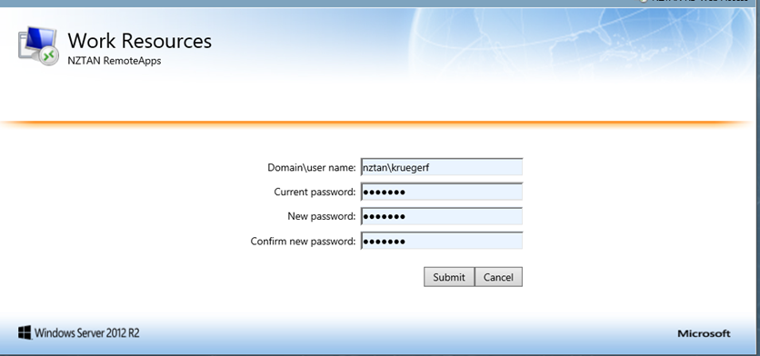

Waka Kotahi ABSuite Handbook

|
|
Waka Kotahi ABSuite Handbook |
|
| How To... |
|
How-To... ProjectCodes Servers People Support ABSuiteReleases ABSuiteSetup TroubleShooting Releases Projects Azure DevOps Application NZTA Register AC DLR MVR Tools Zebra Printer DATA COPY TOOL WikiSearch |
All Freshers has to go through the following Steps to get NZTAN RDS services1.Accessing Dev LibraryTo access development library Click on Development Library 2.Remote DesktopClick to download Remote Desktop in your system Remote Desktop You will be required to use 2 factor authentication to log into any NZTAN RDS services from now on.3. 2FA Authentication ProcessDownload and install the microsoft Authenticator app in your phone On the RDS website open https://authlitetokenmanager.nztan.net.nz Step1 :Enter the username with domain NZTAN. Step2 :Enter the password provided and submit it. Step3 :Select “Add OATH token” Step4 :check the “ONLINE” option and Click “Add Step5 :then a QR code will be displayed.You should scan this with the Authenticator app on your phone, and then click “Done”. The new OATH token will automatically be associated with your user accoun 3.1 Using your 2FA credentialsLaunch the Microsoft Authenticator app on your phone. On the RDS website: https://rdswlg.nztan.net.nz/RDWeb/Pages/en-US/Default.aspx or https://rdsakl.nztan.net.nz/RDWeb/Pages/en-US/Default.aspx Enter your username followed by a dash “-” followed by the six digit code shown on your authenticator. Then enter password as normal. Note the code number changes every 30 seconds, and must be entered while still current. 3.2 Will bring up the RDS WebsiteAnd you should be able to launch apps successfully 3.3 Launching an application (if the session has timed out due to inactivity)This will pop up as it is expecting your 2FA credentials. But most of the time we have found it is impossible to re-authenticate successfully. The recommendation is to logout of the website and log back in again with 2 factor authentication. 3.4 Changing passwordsWhen you need to change your password, use the Click Here link on the RDS website And change your password as normal 4. Requesting an AVD
Service Portal for AVD request 5. ADOChecking Access for Azure Dev Ops Azure Dev Ops6. Steps Inside VM6.1 Folder MappingOpen This PC->Click 'computer'in the top left->Click 'Map network drive'->In Drive (Dropdown) select any one of the empty alphabet->In folder Enter the 'path'(Mentioned Below)->Click 'finish' Paths to be Mapped
6.2 VScode - Connecting to project,MappingStep1: Download the Visual Studio Profession version 13 with Update 4 Step2: Tools->Options->SourceControl->'VisualStudio Team Foundation Server'(In The Dropdown)->Environment->Saving & Editing (Dropdown)->select Prompt for check out Step3: In Team Explorer Click 'plug in' symbol->Click 'Select Team Project'->In the dropdown select 'dev.azure.com/nztasd'->Click on 'Connect' Step4: VIEW->Other Windows->Source Control Explorer Step5: In Solution Control Explorer ->Expand SharedDelivery->Expand Core->Expand Dev->Expand the Stream you are Working on->Click the required Field->Click Not mapped->Browse for folder->Create a folder name NZTA_CODE->Create another folder with stream name under NZTA_CODE->Click 'OK'->Right click the required Field->Get Latest Version->Open Solution to View the Source Code |